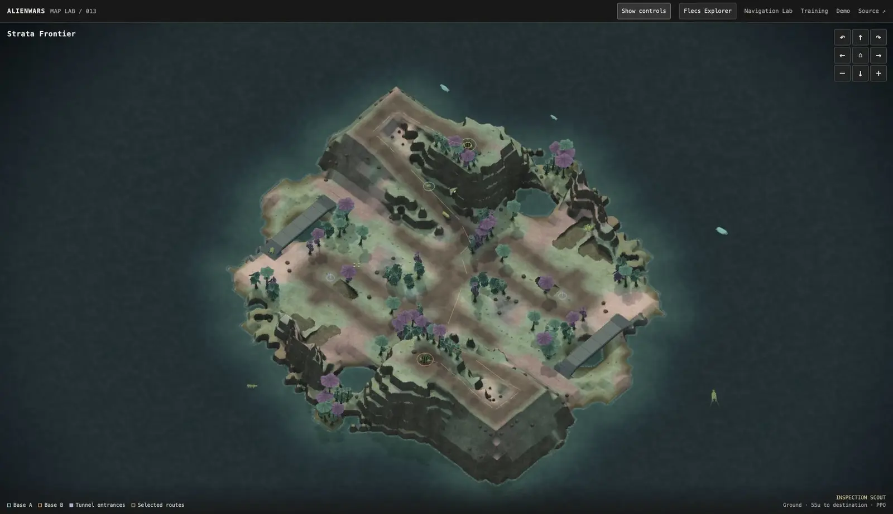
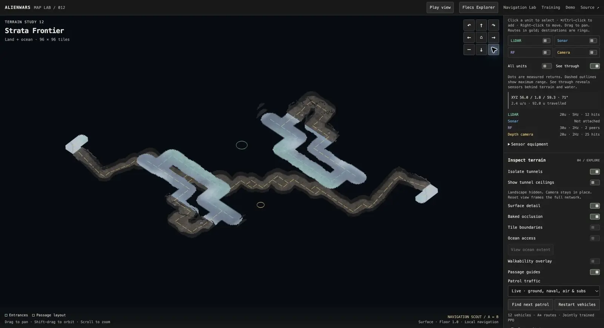
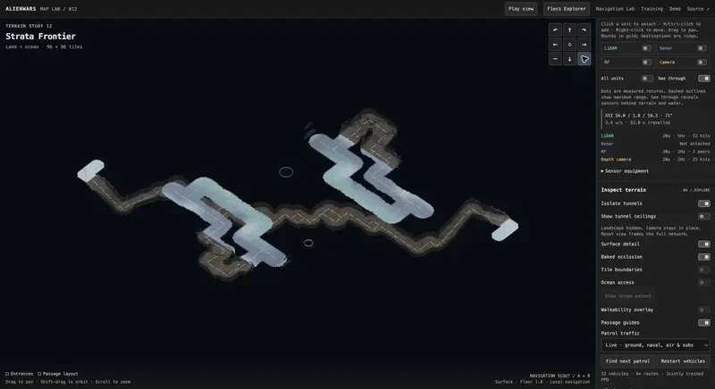
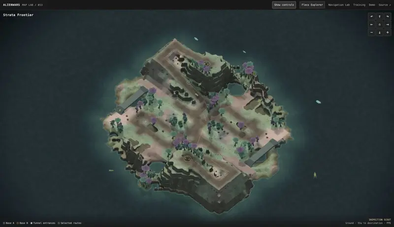
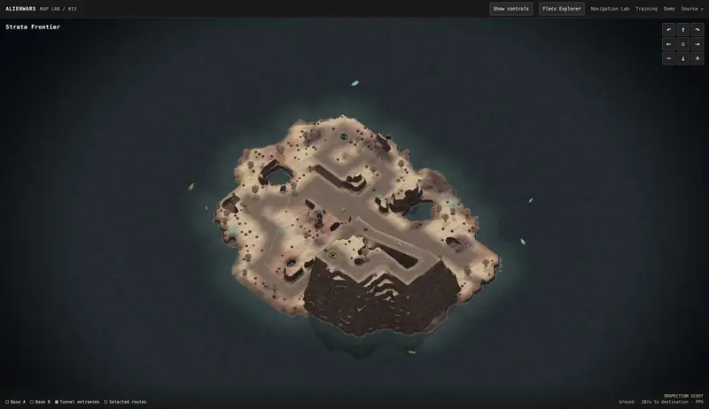
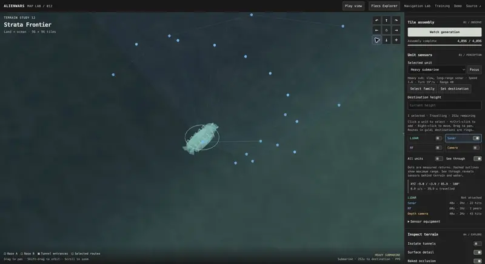
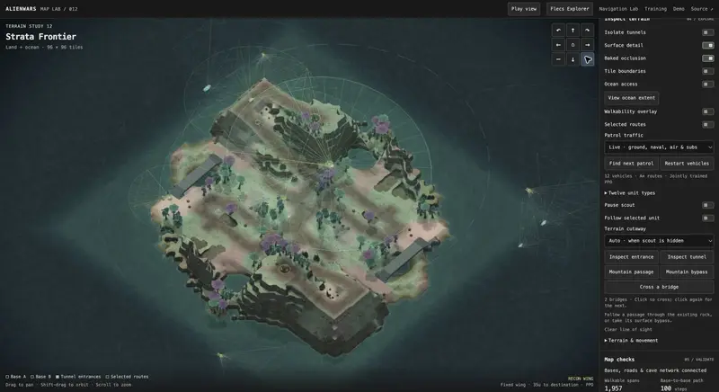
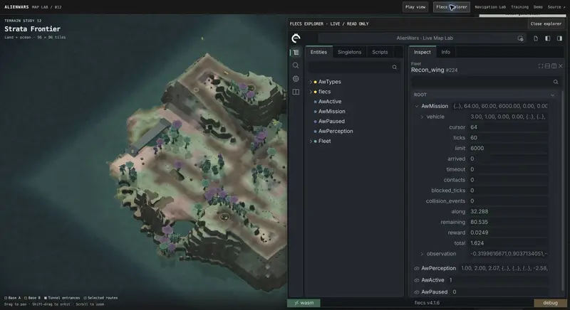
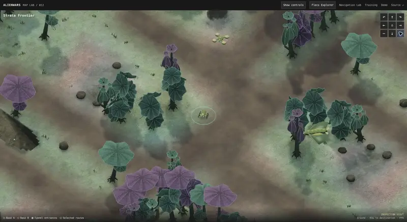

AlienWars Gym
AlienWars Gym trains vehicle agents in procedurally generated 3D worlds. PufferLib 5 trains PPO controllers on CUDA. The same C simulation, sensors and trained policies also run in the browser through WebAssembly.
Map Lab runs the full simulation in the browser. It can take a while to start.

- Trainer
- PufferLib 5, PPO on CUDA
- Runtime
- C, Flecs, Raylib
- Browser
- WebAssembly
- Vehicles
- 12 across land, sea, air and underwater
Worlds
Wave Function Collapse connects terrain tiles, road grades and tunnel profiles. Each seed produces coastlines, hills, beaches, cliffs and lakes, with bridges and mountain passes fitted to the terrain. The ocean floor uses the same geometry that sonar and submarines navigate.
Maps can be symmetric or asymmetric, with bases up to ten floors high, in Temperate, Desert or Frozen palettes.

Agents
There are twelve vehicles: three ground vehicles, three boats, three aircraft and three submarines. Each has its own hull, speed, turning limits and sensor range. Fixed-wing aircraft hold forward airspeed; the quadcopter can hover and strafe; boats respect draft; submarines travel below the surface.
A* plans global routes and PPO controls local navigation. Five family policies train at the same time in shared worlds, and each vehicle has its own destination and recurrent memory. The browser loads the selected trained checkpoints.
Sensors
Units carry LiDAR, sonar, RF and depth cameras. Equipment changes the policy inputs; overlays only change the display. Generation, collision, navigation and sensing share one C model that does not depend on the renderer, and sensor sampling runs without graphics during training.
Evaluation
The September 18, 2026 reliability test added sensor-history anticipation, yielding, braking checks and recovery limits, and ran 49.5 million more steps across three seeds with frozen historical traffic. The candidate failed the reliability and endurance gates, so the public demo still uses the September 16 checkpoints.
Scenes to open
Each link opens Map Lab at a specific seed and view. Map Lab downloads the simulation and trained policies, so the first load takes a while on a laptop.

Symmetric desert with tunnels ↗Cutaway view, seed 73
Temperate battlefield ↗Seed 73
Asymmetric desert ↗Bases at different heights Frozen frontier ↗Symmetric, frozen palette
Frozen frontier ↗Symmetric, frozen palette
Submarine sonar ↗Heavy submarine with sonar range
All sensor overlays ↗Every unit, every sensor
Flecs Explorer ↗Inspect a live unit’s state and PPO inputs
Biological units ↗Play view with grown vehicles
Video
The game dev harness: a coding agent and reinforcement learning in one development loop.